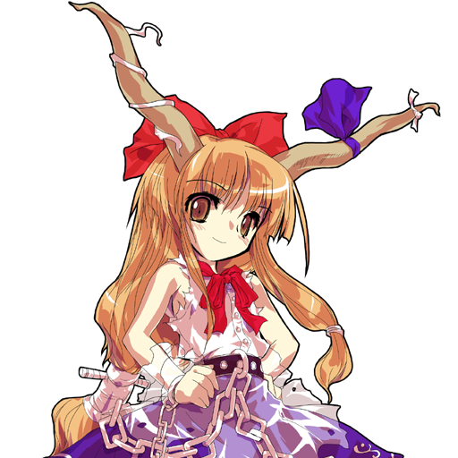
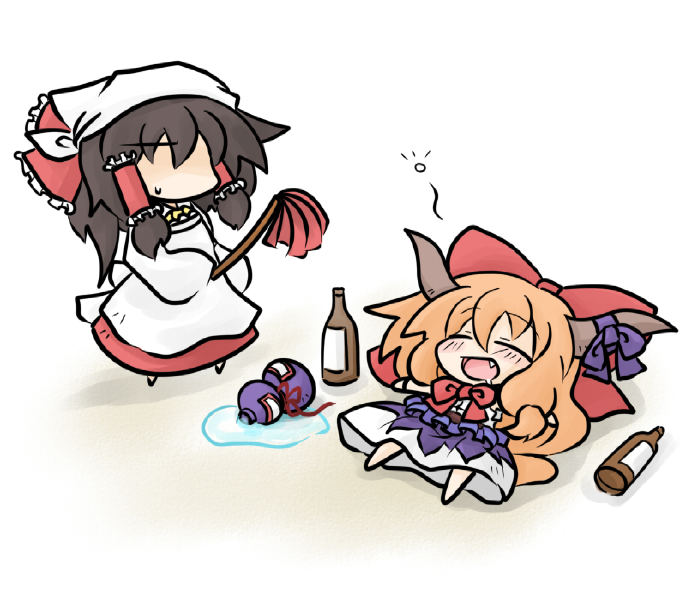
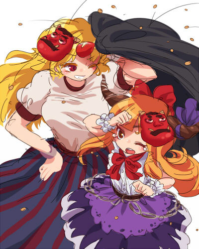
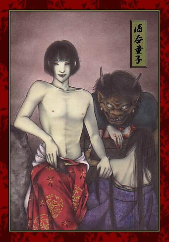

喜歡熱鬧的鬼──伊吹萃香，因為原本應該熱鬧的春天遲遲沒來
等來的時候後卻只剩短暫的一些時間，一怒之下用了能力
讓所有人在不知不覺間，每隔三天就開一次宴會
靈夢等人(看使用角色為何)因察覺有異，搶在下次宴會開始前查明真相
最後藉著紫的能力才找到真兇。後來到了夏季宴會次數就慢慢的回覆正常，
而萃香也開始常常於神社出沒...

伊吹 萃香
種族: 鬼
能力: 控制密度 (操縱萃（聚集）與疏（分散）)
外號: 西瓜("萃香"的日文諧音) 紅白後宮2
人們會不斷舉辦宴會,就是因為萃香利用能力把人們聚集在一起的緣故
另外她能將自身分裂,成為霧氣狀或巨大化,輕易舉起巨石
特徵是頭上的兩根長角和身上的鎖鏈
以日本知名三大妖怪之一的酒吞童子為藍本所創出的角色
外表像個蘿莉,可是嗜酒如命,常把自己搞得醉醺醺的
隨身帶的葫蘆形酒壺叫"伊吹瓢",是件酒從中取之不盡的寶物
為何喝不完,聽說是裡面有隻酒蟲. 還附有防翻倒的機制,一次只能倒出一壺的份量
跟常識神話設定相同,弱點是炒過的大豆(笑)
大多數的鬼都很正直不會說謊,萃香可能是其中的問題兒童(也並非說謊,只是把話說得模擬兩可)
她和八雲紫是老朋友,很久以前似乎居住在現世,對人感到失望才離開
究竟多久以前來到幻想鄉,這就不清楚...

借由認識靈夢的關係,逐漸恢復接觸人類。

與『地靈殿』登場的鬼 星熊勇儀交情很好。
萃夢想裡初登場的就這一個人物~
因為還有時間,順便介紹一下"酒吞童子"好了
從萃香喜歡罵人類"騙子"這個設定中,可發現角色的關聯性還不淺
<關於酒吞童子>

傳說中擁有英俊少年外表的鬼,專門勾引處女後生食她們乳房的肉(變態大色狼啊...)
因為是鬼老大,曾在1000年前率領鬼怪危害京都,一般認為是日本鬼中最強大的
出身似乎是日本八岐大蛇與人類女性私通所生之子
在某次祭典中,愛惡作劇的酒吞童子戴上祭祀用的鬼面具大鬧特鬧
結果不知為何在祭典後無法取下面具,從此不能和人一起生活,深藏在深山
之後酒吞童子與另一名鬼茨木童子暗謀
將以大江山為據點率領鬼部將們奪取天下
常下山抓走王公貴族的女兒,生食其肉飲酒作樂
當時的天皇派源賴光與其部屬共六人前往大江山進行討伐
路途中賴光遇高人幫助,得到一瓶"神便鬼毒酒"
此酒人喝下後可得神力,鬼喝下後則會盡失妖力
賴光佯裝旅人投宿,巧遇童子正在舉辦宴會
他邀請賴光和六名部下一起入席,賴光趁機向他獻酒
(順便一提,6人其中之一的名字即"阪田金時" XD)
童子喝下後發現美味異常,便分給席上所有鬼一起喝
結果酒毒使酒吞童子全身無力而昏睡,賴光立刻砍下其頭顱
酒吞童子緊咬賴光身上的盔甲連語:
「人類都喜歡欺騙人！我們鬼可是從來都不會說謊的！」
然後含恨而終...
說到萃香的BGM改編曲 最具代表性的應該是這首吧?
東方萃夢想「砕月～天零萃夢」
作曲：Ｕ２ 作詞：あおぎり 歌手：Re_A
歌詞跟出身也具有某種關聯
日文歌詞來源
中文歌詞來源
在層層的夜霧之間月亮圓又圓 仰望到的那形貌是人們所陌生的
而其身懷的神力 無人可相比
沒有棲身的土地也與天界毫無瓜葛 只潛藏在角落與黑暗中
然而他們卻經常紮根於 人們所聚居之處
有人讚頌他們為粗暴之神 卻也被視為邪惡的化生而遭到驅除
而就連讓人們感受到的恐懼 也都只是為了想和人類有所牽繫而已
黃昏已過今宵正要開始 乩童們啊聚集到宴會來吧
然而那卻是人類的欺瞞 他們逐漸地被捕殺
如今已沒有什麼歡樂的伊吹 就連月光也被打碎
昔日的牽繫已完全斷絕 他們永久地消失了
不知經過了多少流逝的年月 最後他們也已被人類遺忘
那幽幽地殘留的幻影 是不知何時看見過的萃夢想
有人讚頌他們為粗暴之神 卻也被視為邪惡的化生而遭到驅除
而就連讓人們感受到的恐懼 也都只是為了想和人類有所牽繫而已
不知經過了多少流逝的年月 最後他們也已被人類遺忘
那幽幽地殘留的幻影 是不知何時看見過的萃夢想
新作<地靈殿>登場的星熊勇儀,這個角色在傳說中是酒吞童子的部屬之一
所以劇情中應該是有不少交集才對... 這份資料等我慢慢補完吧
下一篇終於輪到我喜歡的永夜抄了w
[ 推薦閱讀 ]
東方相關的文章目錄 - 2008